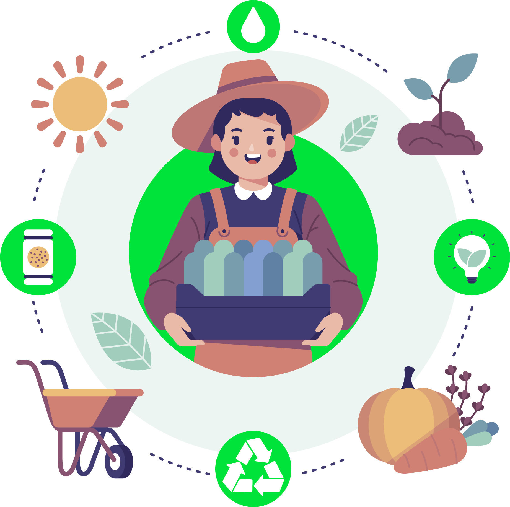
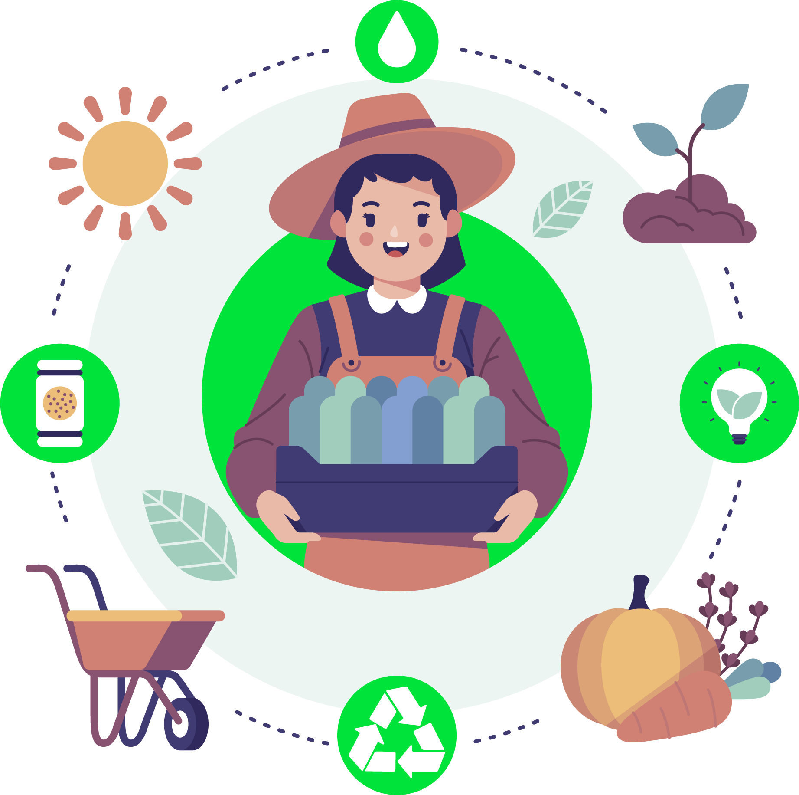

OBP FIAP
Para atender a Global Solution deste semestre, foi desenvolvido um projeto que visa contribuir nas metas de combate a fome e agricultura sustentavel.
CONHECER
Para atender a Global Solution deste semestre, foi desenvolvido um projeto que visa contribuir nas metas de combate a fome e agricultura sustentavel.
CONHECERO tema nessa Global Solution aborda as metas que tem o objetivo de erradicar a fome, alcançar a segurança alimentar, melhorar a nutrição e promover a agricultura sustentável até 2030.
Com base nas metas passadas e no ciclo de alimentos mostrados durante o evento, o grupo decidiu por trabalhar em cima da parte de distribuição dos alimentos e no melhor aproveitamento dos alimentos.
O grupo propôs uma aplicação web para São Paulo, onde as pessoas podem descobrir regiões que precisam de doações. A aplicação também lista as principais ONGs e entidades locais envolvidas na distribuição de alimentos, fornecendo informações sobre como doar e quais itens são necessários. A aplicação tambem oferece artigos e recursos educativos para conscientizar as pessoas sobre o aproveitamento de alimentos, metas de combate a fome e o destino adequado dos alimentos após o consumo.
 
